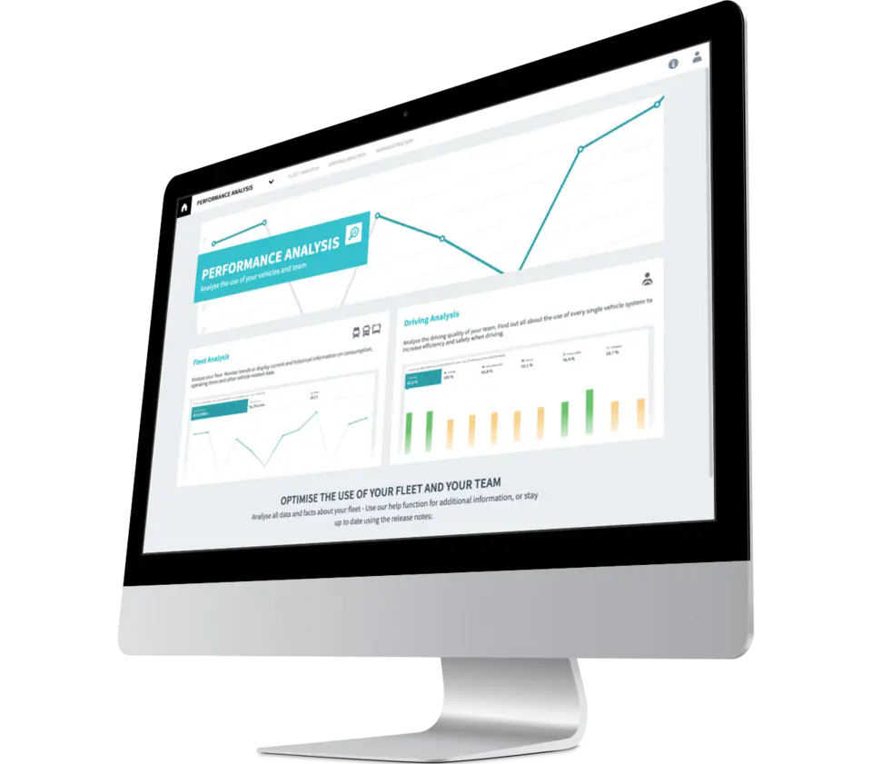
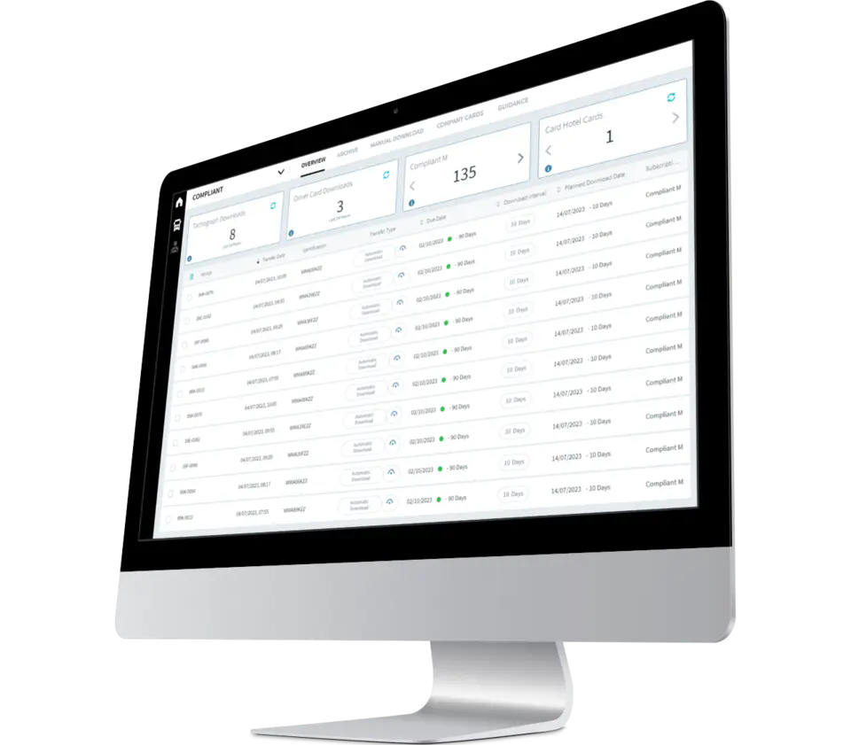
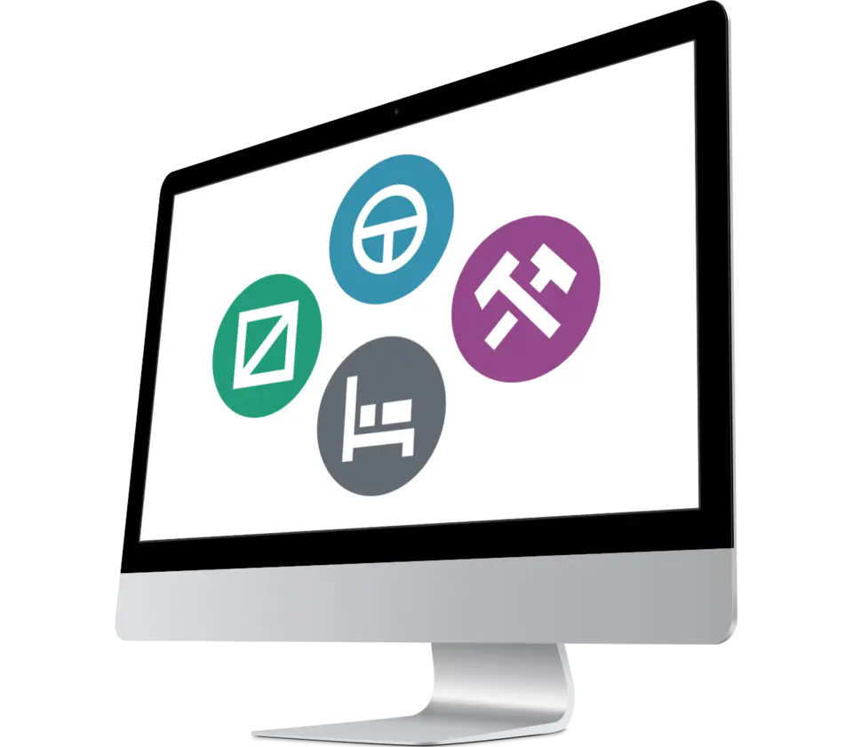
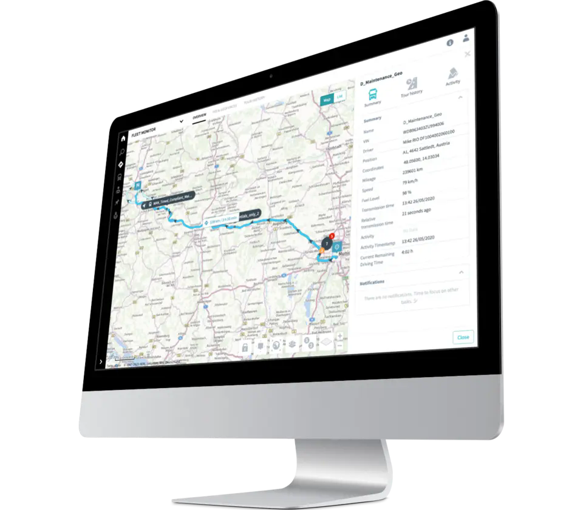
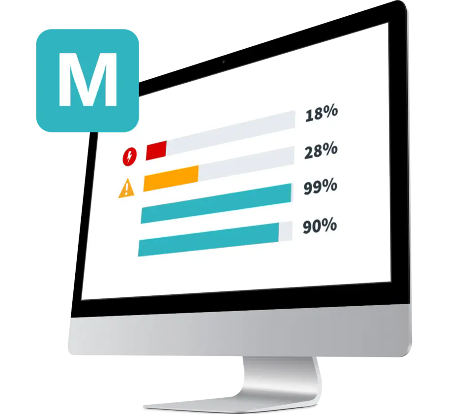

Telematik von MAN
3 Monate kostenlos
testen.
Jetzt kostenlos testen
MAN Free Trial
Mehr Transparenz für Ihre Flotte. Ohne Startkosten.
Testen Sie die Telematik- und Flottendienste von MAN drei Monate kostenlos und erleben Sie, wie Fahrzeugdaten den Alltag im Transportunternehmen vereinfachen: von Verbrauch und Wartung über Lenkzeiten bis hin zu Standort, Compliance und Betriebskosten.
Die Dienste werden über den MAN Marketplace auf der RIO Plattform gebucht und genutzt. RIO ist dabei der digitale Zugangspunkt, über den Sie MAN DigitalServices zentral aktivieren, verwalten und in Ihren Fuhrpark integrieren.
Enthaltene Dienste
Diese MAN DigitalServices können Sie kennenlernen.
Die folgenden Dienste unterstützen Transportunternehmen dabei, Fuhrparkdaten besser zu nutzen, rechtliche Pflichten einfacher zu erfüllen und den täglichen Betrieb planbarer zu machen.
Daten & Analyse
Perform
Perform identifiziert ineffiziente Fahrweisen und hilft dabei, Kraftstoff- und Energieverbrauch zu reduzieren. Der Dienst wertet Daten zum Fahrer- und Fahrzeugeinsatz aus und zeigt Potenziale für eine wirtschaftliche und verschleißoptimierte Fahrweise. Ideal für Fuhrparkverantwortliche, die die Leistung ihrer Fahrer gezielt verbessern und den Verbrauch senken möchten.
- Analyse von Verbrauch, Standzeiten und CO2-Emissionen
- Vergleichbare Bewertungen von Fahrer- und Fahrzeugeinsatz
- API-Option zur Integration in bestehende Systeme


Compliance
Compliant M
Compliant M sichert Tachographen- und Fahrerkartendaten automatisch per Fernauslesung. Das integrierte Analyseportal weist schnell auf Verstöße gegen die Arbeitszeiten der Fahrer hin und schafft eine fundierte Grundlage, um diese zu reduzieren. So verringern Sie den manuellen Aufwand und stärken die Compliance.
- Automatischer Remote-Download von Tacho- und Kartendaten
- Analyseportal für schnelle Erkennung von Verstößen
- Optionales Unternehmenskarten-Hosting im Kartenhotel
Zeitmanagement
Timed
Timed bietet jederzeit einen Überblick über die aktuellen Lenk- und Ruhezeiten. So lassen sich die Zeitfenster der Fahrer bestmöglich nutzen, Stresssituationen reduzieren und die Abläufe im Tagesgeschäft besser planen.
- Überblick über Lenk- und Ruhezeiten in Echtzeit
- Tabellenansichten für Tag, Woche und Doppelwoche
- Mehr Planbarkeit für Disposition und Tagesgeschäft


Ortung & Routen
Geo
Mit Geo sehen Sie nahezu in Echtzeit, wo sich Ihre Fahrzeuge befinden, und können individuelle Geofences erstellen und überwachen. Mithilfe der Fahrthistorie einschließlich der Fahrereignisse lassen sich Routen analysieren und künftig verbessern.
- Live-Positionen und Fahrthistorie bis zu 25 Monate
- POI, Geofences und automatische Ereignisbenachrichtigungen
- Lkw-Routenplanung inklusive Verkehr und Mautbetrachtung
Wartung
MAN ServiceCare M
MAN ServiceCare verbindet Ihre Fahrzeuge mit der Werkstatt und schafft Transparenz über Wartungsbedarfe und Verschleißdaten. Ihr MAN Servicestützpunkt kann anstehende Arbeiten vorausschauend bündeln und Werkstatttermine effizient koordinieren. Das hilft, Werkstattbesuche zu reduzieren und die Fahrzeugverfügbarkeit zu erhöhen.
- Detaillierter Überblick über Wartungszustand und Komponenten
- Informationen zu Bremsbelägen, Füllständen und Reifendruck
- Mehr Fahrzeugverfügbarkeit durch proaktive Werkstattplanung

Kostenmanagement
MAN SimplePay
MAN SimplePay bündelt die unterwegs anfallenden Betriebskosten Ihrer Flotte digital auf einer zentralen Plattform. Tank- und Ladekarten verschiedener Anbieter lassen sich an einem Ort verwalten. Das reduziert den Verwaltungsaufwand, erleichtert die Zuordnung zu Fahrzeugen und ermöglicht transparente Auswertungen.
- Transparente Betriebskosten pro Fahrzeug
- Analyse von Einsparpotenzialen und möglichen Betrugsfällen
- Kontaktlose Tank- und Parktransaktionen per MAN Driver App
Häufige Fragen
Das Wichtigste zum kostenlosen Test.
Hier finden Sie Antworten zu Kosten, Laufzeit, Fahrzeugen und der weiteren Nutzung der MAN DigitalServices.
Zur Schritt-für-Schritt-AnleitungWas kostet das Testangebot?
Das Testangebot ist drei Monate kostenlos. Es entstehen keine Startkosten und keine versteckten Kosten.
Muss ich das Testangebot kündigen?
Nein. Der kostenlose Test endet nach drei Monaten automatisch. Eine Kündigung ist nicht erforderlich.
Was passiert nach Ablauf der drei Monate?
Es erfolgt keine automatische kostenpflichtige Verlängerung. Wenn Sie einen Dienst weiter nutzen möchten, können Sie ihn anschließend kostenpflichtig buchen.
Welche Fahrzeuge werden unterstützt?
Das Angebot richtet sich an MAN Diesel-Lkw mit geeigneter Telematik-Box. Ob ein Fahrzeug teilnehmen kann, hängt von der technischen Verfügbarkeit des jeweiligen Dienstes ab.
Kann ich mehrere Fahrzeuge testen?
Sie können das Testangebot für mehrere technisch geeignete Fahrzeuge aktivieren. Die Verfügbarkeit wird je Fahrzeug geprüft.
Wer kann die Dienste nutzen?
Die Dienste werden über einen RIO Account aktiviert und genutzt. Für die Buchung benötigen Sie die entsprechenden Berechtigungen für Ihr Unternehmen und Ihre Fahrzeuge.
Sind meine Daten sicher?
Fahrzeug- und Unternehmensdaten werden über die cloudbasierte RIO Plattform verarbeitet. Maßgeblich sind die jeweils geltenden Datenschutz- und Sicherheitsbestimmungen von RIO und MAN.
Kann ich die Dienste nach dem Test weiter nutzen?
Ja. Nach dem automatischen Testende können Sie die gewünschten Dienste bei Bedarf regulär kostenpflichtig buchen.
Persönliche Beratung
Bereit für den nächsten Schritt?
Aktivieren Sie den Testzeitraum oder lassen Sie prüfen, welche MAN DigitalServices für Ihre Flotte technisch verfügbar sind. So gelingt der Einstieg in digitales Flottenmanagement ohne unnötigen Aufwand.